Систематическое изучение Библии
Научим видетьХриставо всём Писании
Бесплатно учим служителей любых протестантских церквей вести людей по всей Библии, от Бытия до Откровения — так, чтобы в каждом уроке был виден Христос. Готовые уроки, видео и личный наставник.
- Гости

Есть люди, которые годами приходят на чай и общение, но так и не приняли Христа?
- Верующие

Прихожане думают, что в Ветхом Завете спасались делами, а не Христом?
- Служители

Лидеры домашних групп не могут ответить на вопросы людей и сами мучаются сомнениями?
- Пастор

С одними и теми же вопросами люди идут к вам, а не к Писанию?
- Дети и подростки

Уроки воскресной школы сводятся к «слушайся родителей», и дети от них устают?
- 390уроков-конспектов с видео
- 66книг Библии по порядку
- 7лет уроков — вся Библия по порядку
- 2000+лет церковь читает Писание через Христа
1 · Знакомо?
Мы сами через это прошли
Эти вопросы мы годами задавали себе в своих церквях — пока не начали изучать с людьми саму Библию, по порядку. Если что-то знакомо и вам, отметьте: поделимся тем, что помогло нам.
ГостиНеверующие и «захожане»
ВерующиеВера держится на схеме, а не на Слове
СлужителиУчат других, но сами без опоры
ПасторВсё сходится на вас
Дети и подросткиМораль вместо Христа
0из 19
Отметьте то, что узнаёте.
2 · Решение — метод
Систематическое изучение Библии
Каждый урок — это разбор самой Библии по порядку, от Бытия до Откровения. В каждом уроке мы показываем Христа и Евангелие, учим благовествовать и применять Слово в жизни веры сегодня. Глубина семинарии — простыми словами.
Через Христа
Каждый урок ведёт ко Христу, и в каждом звучит Евангелие. Открывает его Дух Святой — поэтому мы учимся с молитвой.
- Неверующим
- в каждом уроке вплотную сталкиваются со Христом и с вопросом: принять ли Его.
- Верующим
- Евангелие повторяется из урока в урок: вера крепнет, а слова запоминаются сами — и люди так же проповедуют на работе, в учёбе, дома.
- Быт. 3:15
- Ис. 53
- Откр. 5
Ин. 5:39 · Лк. 24:27 · Деян. 10:43
Через Божьи заветы
Ветхий и Новый Заветы — одна история: один Бог спасает одной верой.
- Верующим
- проходит страх суда и путаница «вера или дела»: видно, как спасались Авраам и Давид — и как спасён я.
- Служителям
- уверенность: они спокойно объясняют трудные места Ветхого Завета и отвечают на сложные вопросы людей.
- Эдем
- Обетование
- Закон и Скиния
- Новый завет
Быт. 3:15 · Гал. 3:8 · Лк. 22:20
Через историю искупления
Вся Библия по порядку: Сотворение — Грехопадение — Восстановление во Христе.
- Служителям
- навык самим толковать любой текст и готовая система, которую они передадут своим людям.
- Пастору
- не нужно каждую неделю искать тему: просто идёте по тексту, и церковь слышит всю Библию.
- Сотворение
- Грехопадение
- Восстановление
Быт. 1–3 · Лк. 24:25-27 · Деян. 7
Древний путь Церкви — в формате уроков
Это не современная выдумка. Видеть во всём Писании Христа и историю искупления учили Христос и апостолы, отцы церкви и реформаторы, каждый в своё время и своими словами. Мы лишь собрали этот путь в понятные уроки с конспектами и видео.
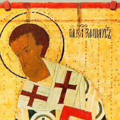

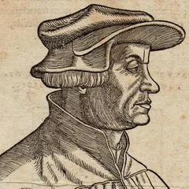
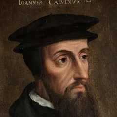
Идём по тексту подряд
Не выбираем тему, а читаем и объясняем Библию глава за главой.
Неем. 8:8
Иоанн Златоуст, Августин, Цвингли, Кальвин
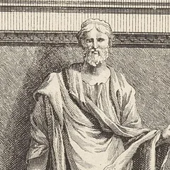

В каждом уроке — Христос
Ветхий Завет тоже о Христе — так учил Сам Господь, а отцы церкви видели в нём прообразы Христа.
Ин. 5:39 · 1 Пет. 1:10-11 · Деян. 10:43 · 2 Кор. 3:14
Христоцентричное (типологическое) чтение
Мелитон, Ириней, Августин

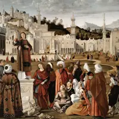

Евангелие и благовестие
От сотворения до Христа одним рассказом — так благовествовали Стефан и апостолы. Этот рассказ от эпохи к эпохе позже исследовало библейское богословие.
Лк. 24:25-27 · Деян. 7:2-53 · Евр. 11
Библейское богословие Гергардуса Воса
Гергардус Вос


Жизнь веры сегодня
Бог ведёт свой народ заветами — как Ноя и Авраама, так и нас: истории веры применяем к своей жизни.
Быт. 15 · Иер. 31:31 · Лк. 22:20
О. Палмер Робертсон, Мередит Клайн
Суть методики
Ваши служители изучают уроки
По нашим записанным видео и конспектам, с молитвой о том, чтобы Дух Святой открывал Слово.
Конспекты всех уроковYouTube «Завет Христа»YouTube «Завет Христа СПб»RutubeVK Видео
Мы помогаем им подготовиться
Наставник разбирает с каждым уроки один на один и отвечает на вопросы. Бесплатно, онлайн. Руководит служителями по-прежнему ваш пастор: мы только даём обучение.
Служители учат у вас в церкви
Так, как решит ваш пастор. Например:
- Раз в две недели по воскресеньям — по этим урокам, по тексту Библии. В остальные воскресенья — ваши проповеди, как сейчас.
- Отдельный день на неделе, когда служители преподают Библию по урокам.
- Верующие сами смотрят записи уроков, а на домашних группах обсуждают их со служителями: те поправляют и отвечают на вопросы.
Плоды
- Неверующие вплотную сталкиваются со Христом.
- Верующие обретают уверенность и благовествуют.
- Служители обретают глубину и легко отвечают на вопросы.
- Пастор получает крепкую общину, где верующие вырастают в служителей.
При этом вы сохраняете своё: видение, литургию, особенности вашей церкви. А мы радуемся вместе с вами во Христе, когда ваша церковь открывает глубину и силу Писания.
Мы соединяем два мира: глубина семинарии — языком, понятным ребёнку и старику.
Глубина семинарии, которая не доходит до церкви
Три примера: как обычно читают и что на самом деле показывает текст. Переверните карточку.
3 · Сравнение
Чем метод отличается от других
Мы пробовали много других методик в своих церквях и остановились на одной: последовательно изучать саму Библию. Разница не в деталях, а в замысле — как между бассейном и Босфором.
Курсы и тематические программы — как изредка заходить в бассейн поплавать для души: приятно и полезно, но далеко не уплывёшь.
Последовательное изучение Библии — как целенаправленно готовиться переплыть Босфор: шаг за шагом, от Бытия до Откровения, до другого берега.
Мы уважаем многие программы и сами учились по ним. Слева — что у них хорошо и чего им не хватает, справа — как мы стараемся сохранить сильное и восполнить недостающее.
Индуктивное изучение Библии
Хорошая тактика без стратегии. У нас — и тактика, и стратегия.
Что у них хорошо — сохраняем и мы
- Учит читать сам текст, а не мнения о нём.
- Медленное внимание к деталям отрывка.
- Вовлекает группу в обсуждение.
- Отрывок разбирают в отрыве от всей истории спасения.Каждый отрывок стоит на своём месте от Бытия до Откровения.
- Христа в Ветхом Завете видят редко, применение скатывается в мораль: «будь как Давид».Показываем Христа через всё Писание — и так же глубоко разбираем отрывок, стих за стихом.
- Выводы зависят от уровня ведущего.Ведущий готовится по конспекту и с наставником, поэтому выводы держатся на тексте.
Альфа-курс, курсы основ и катехизации
Хороший вход в веру. Но краткий курс основ — ещё не основание.
Что у них хорошо — сохраняем и мы
- Просто, доступно, гостеприимно.
- Быстро даёт основы веры.
- Хорош для первого знакомства.
- Вера опирается на упрощённую схему, а не на текст Библии.Глубокое изучение самого Писания — крепкое основание.
- Ветхий Завет почти не затронут: «как спасались в ВЗ?» остаётся без ответа.Понимание всего Писания, особенно Ветхого Завета, через Христа.
- Курс заканчивается через несколько недель — дальше расти некуда.Путь на годы: от Бытия до Откровения, с наставником.
Библейские школы и колледжи
Системность есть, но часто это тематические схемы, а не Писание подряд.
Что у них хорошо — сохраняем и мы
- Программа, преподаватели, богословская база.
- Охват всех основных доктрин.
- Темы приходят к тексту сверху: стихи собирают под тезис, контекст книги теряется.Системность из порядка самого Писания: доктрины вырастают из текста по мере чтения.
- Сложный академический язык.Семинарская глубина простыми словами.
- Нужны время, деньги, переезд — знания не доходят до прихожан.Бесплатно и рядом: в вашей церкви или онлайн. Каждый ученик учит дальше (2 Тим. 2:2).
Тематическая проповедь «по всей Библии»
Хорошо раскрывает тему, но тяжела для пастора и открыта для перекосов.
Что у них хорошо — сохраняем и мы
- Ясно раскрывает одну тему и основы веры.
- Удобна для праздников и особых нужд.
- Каждую неделю пастору нужно придумывать тему.Вы просто идёте по тексту: тема следующего воскресенья уже задана.
- Стихи из разных книг собраны под тему: легко невольно вчитать в них своё.Текст сам удерживает от своих выдумок: читается всё, включая неудобные места.
- Перекосы: годами о десятине, о делах или о мистике.За цикл церковь слышит всю Библию — так проповедовали Златоуст, Августин, Цвингли и Кальвин.
Короткие евангелизационные послания
«Путь спасения», «Крест», «10 писем» — послания движения Даракбанг. Местами хорошие материалы для евангелизации, но само движение многие деноминации признали еретическим.
Что у них хорошо — сохраняем и мы
- Коротко и понятно о сути Евангелия.
- Хороший первый шаг для неверующего.
- Учат каждого прихожанина делиться верой.
- Дают вход, но не дают глубины для жизни веры.Вся Библия — одно Евангелие, поэтому глубина и евангелизация идут вместе.
- Служители не вырастают в учителей.Служители растут: каждый урок пересказывают и объясняют сами.
- Уверенность держится на заученном послании.Простые верующие уверенно благовествуют своими словами, опираясь на текст.
Обзорные видеокурсы и «Библия за год»
Отличный обзор, но посмотреть и прочитать — ещё не понять и не научить.
Что у них хорошо — сохраняем и мы
- Видна вся Библия целиком.
- Красиво и доступно.
- Дисциплина ежедневного чтения.
- Обзор вместо разбора отрывков.Та же большая картина плюс разбор каждого отрывка.
- Пассивный просмотр без наставника.Видео и конспект к каждому уроку, еженедельный созвон с наставником.
- Ветхий Завет прочитан, но остаётся непонятным.Каждая книга раскрыта через Христа.
Курсы «процветания» и «силы»
Вера в действенность Слова, но Библия читается выборочно.
Что у них хорошо — сохраняем и мы
- Ожидание Божьего действия.
- Вера в силу Слова.
- Читают обещания успеха и исцеления, а Иов, Плач, крест и страдания выпадают.Читаем всю Библию, включая Иова и Плач, поэтому вера выдерживает страдания.
- Спасение незаметно смешивается с успехом и делами.Ясно различаем религию и Евангелие: спасение — дар во Христе.
Свидетели Иеговы
Тоже предлагают «изучение Библии» на дому. Но это не христианство.
Это не христианство
- Отрицают Троицу и Божество Иисуса Христа: Христос у них — сотворённый архангел Михаил.
- Святой Дух для них — безличная сила, а не Бог.
- Пользуются своим «Переводом нового мира», где изменены ключевые стихи, например Ин. 1:1.
- Учение строится на литературе организации, а не на свободном чтении Писания.
Мы
- Мы — протестантские церкви «Завет Христа», наши служители названы по именам.
- Исповедуем Троицу и Никео-Цареградский Символ веры, общий для всех христиан.
- Учим по Синодальному переводу; толкование проверяем самим Писанием.
Источники: Свидетели Иеговы — Википедия · Вероучение (англ.) · Источник самой организации: jw.org
Синчхонджи («Новое небо, новая земля»)
Ходит по церквям под видом бесплатных библейских курсов. Но это не христианство.
Это не христианство
- Основателя Ли Ман Хи почитают как «обещанного пастыря», бессмертного и единственного, кто верно толкует Откровение.
- Учат, что спасутся только 144 000 человек — члены их организации.
- Библию толкуют как систему тайных «притч», ключ к которым есть только у Ли.
- Вербуют скрыто, через «бесплатные курсы Библии», не называя себя. Крупнейшие протестантские церкви Кореи признали учение ересью (1995–2005).
Мы
- Мы сразу называем себя: церковь «Завет Христа», имена наших пасторов — в контактах.
- Учим читать открытый текст Библии, без «тайного ключа» и нового пророка. Единственный Посредник — Христос (1 Тим. 2:5).
- Никого не уводим и ничего не требуем: люди крепнут в своей церкви.
Источники: Решения деноминаций (кор.) · Yonhap (кор.) · Синчхонджи — Википедия
4 · Отзывы
Отзывы верующих и пасторов
Сейчас мы записываем интервью с верующими, служителями и пасторами, которые учатся по этим урокам. Скоро они появятся здесь.
5 · Первый шаг
Начните систематическое изучение Библии с одного урока
…что слышал от меня при многих свидетелях, то передай верным людям, которые были бы способны и других научить.
2 Тим. 2:2
Посмотреть первый урок
Быт. 1–3: Сотворение, Грехопадение, Восстановление. Ключ ко всей Библии.
Конспект урокаВидео: «Завет Христа»Видео: «Завет Христа СПб»
Посмотреть все уроки
Конспекты от Бытия до Откровения и видеозаписи уроков.
Все конспектыПлейлисты «Завет Христа»Плейлисты «Завет Христа СПб»
Свяжитесь с нами
Расскажите о своей церкви — обсудим обучение и пробный урок.
Написать в Telegramchrist.covenant.spb@gmail.comВсе контакты
6 · Не новинка
История метода
Изучать всё Писание, видя в нём Христа, — не новинка, а то, как Божий народ учился всегда.
патриархи От Эдема до Моисея
Евангелие передают от родителей детям; жертвы указывают на грядущего Христа.
- Адам

Первое Евангелие — сразу после грехопадения.
Подробнее
Бог обещает Семя жены, Которое поразит змея, и Сам одевает людей в кожаные одежды: первая жертва за грех. Уже его сыновья приносят жертвы Господу.
Быт. 3:15, 21 · 4:1-5
- Авель

Жертва верой: кровь, а не плоды своих рук.
Подробнее
Авель приносит от первородных стада, и Писание называет это верой. Каин приносит плоды земли — свои силы. С крови Авеля Христос начинает счёт крови пророков.
Быт. 4:4 · Евр. 11:4 · 1 Ин. 3:12 · Лк. 11:49-51
- Енох и Ной
Проповедники праведности.
Подробнее
Енох пророчествует о пришествии Господа. Ной проповедует праведность и после потопа приносит жертву; в завете с Ноем Бог обещает сохранять землю, пока сбудется обетование о Семени.
Иуд. 14-15 · 2 Пет. 2:5 · Быт. 8:20 · 9
- Авраам
«Бог усмотрит Себе агнца»: Авраам видел день Христов.
Подробнее
Бог избрал Авраама, чтобы он заповедал детям путь Господень. На Мориа Исаак — прообраз Христа. Павел пишет, что Авраам получил Евангелие заранее.
Быт. 18:19 · 22:8, 18 · Ин. 8:56 · Гал. 3:8, 16
- Иаков

Пророчество о Примирителе из колена Иуды.
Подробнее
Каждое поколение принимает тот же завет; Иосиф завещает вынести свои кости в обещанную землю.
Быт. 49:10 · 50:24-25 · Евр. 11:20-22
- Иов
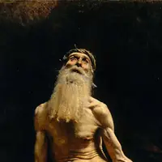
«Я знаю, Искупитель мой жив».
Подробнее
Иов приносит жертвы за детей и в конце — за друзей; ждёт Искупителя и воскресения.
Иов 1:5 · 19:25-27 · 42:8
- Адам
ок. XV в. — 586 до Р. Х. От Моисея до плена
Левиты и семьи учат закону; скиния и жертвы указывают на Христа.
- Синай
Евангелие раньше закона; закон ведёт к жертве.
Подробнее
Закон — зеркало и детоводитель ко Христу, а не лестница к спасению. Закон объясняет проблему, Скиния — решение.
Исх. 20 · 25 · Гал. 3:15-24
- Дом
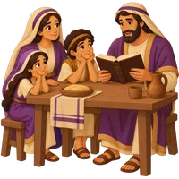
Закон дан, чтобы родители учили детей каждый день.
Подробнее
«Внушай их детям твоим… говори о них, сидя в доме твоём». Пасха — урок для детей: «что это за служение?»
Втор. 6:6-7, 20-25 · Исх. 12:26-27
- Скиния
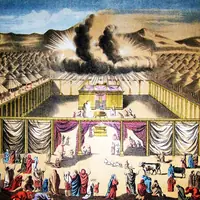
Образ и тень небесного: служение указывает на Христа.
Подробнее
Первосвященник, жертвы, очищение и праздники — книга Левит говорит о Христе почти в каждой главе.
Исх. 25:9, 40 · Евр. 8:5 · 9-10
- Левиты
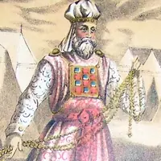
Священники и левиты учат Израиль закону.
Подробнее
Каждые семь лет закон читают вслух всему народу, включая детей и пришельцев.
Лев. 10:11 · Втор. 33:10 · 31:10-13 · Мал. 2:7
- XI–IX вв.

Самуил и школы пророков.
Подробнее
Сообщества «сынов пророческих» в Раме, Вефиле, Иерихоне и Галгале учатся Слову и служению при Самуиле, Илии и Елисее.
1 Цар. 19:20 · 4 Цар. 2:3-5 · 4:38 · 6:1
- ок. 1000
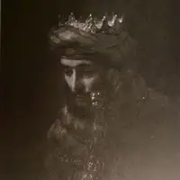
Давид пророчествует о Воскресении Христа.
Подробнее
Бог обещает Давиду вечный престол для его Потомка; Пётр в день Пятидесятницы читает Пс. 15 как пророчество о Воскресении.
2 Цар. 7:12-16 · Пс. 15:10 · 109:1 · Деян. 2:30-31
- ок. 870
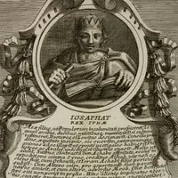
Иосафат посылает учителей по городам с книгой закона.
Подробнее
Князья, левиты и священники ходили по городам Иудеи и учили народ закону Господнему.
2 Пар. 17:7-9
- ок. 740
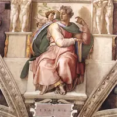
Исаия видит Страдающего Раба.
Подробнее
Пророки исследовали, на какое время указывал Дух Христов.
Ис. 7:14 · 9:6 · 53 · 1 Пет. 1:10-11
- 622

Иосия находит книгу закона — и народ Божий оживает.
Подробнее
Найденную книгу прочитали всему народу; началось обновление завета.
4 Цар. 22-23
- Синай
586 до Р. Х. — I век От плена до Христа
Синагоги, книжники и пророки: Писание читают и объясняют каждую субботу.
- 539
Без храма вера держится на Писании.
Подробнее
Даниил в Вавилоне, читая Иеремию, понимает сроки и получает пророчество о Мессии.
Дан. 9:2, 25-26
- ок. 444
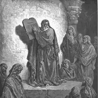
Ездра «читал явственно и присоединял толкование».
Подробнее
Ездра пришёл в Иерусалим в 458 году, расположив сердце изучать закон, исполнять его и учить. При Неемии он читает закон всему народу, а левиты объясняют прочитанное — прообраз экспозиционной проповеди.
Езд. 7:10 · Неем. 8:1-8
- ок. 430

Малахия — последний пророк Ветхого Завета.
Подробнее
Он обещает Ангела завета и пророка Илию; Христос покажет, что это Иоанн Креститель.
Мал. 3:1 · 4:5-6 · Мф. 11:10-14
- III–I вв. до Р. Х.
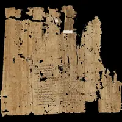
Септуагинта: Писание по-гречески.
Подробнее
В III веке до Р. Х. в Александрии перевели Пятикнижие для евреев, говоривших по-гречески, к I веку — остальные книги. Её чаще всего цитируют апостолы.
- I век
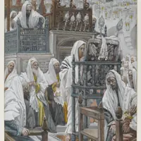
Моисея читают в синагогах каждую субботу.
Подробнее
Верный остаток — Захария, Мария, Симеон, Анна — узнаёт Христа по обетованиям.
Деян. 15:21 · Лк. 2:25-38 · 4:16-21
- 539
30 — 100 гг. Апостольская церковь
Апостолы учат Христу по Ветхому Завету — даже язычников.
- 30
Воскресший Христос изъясняет «всё Писание» о Себе.
Подробнее
«Начав от Моисея, из всех пророков изъяснял им сказанное о Нём во всём Писании». Это исходная точка нашего метода.
Лк. 24:25-27, 44-47 · Ин. 5:39, 46
- ок. 34
Стефан рассказывает всю историю от Авраама до Христа.
Подробнее
Диакон знает Писание так, что пересказывает его целиком: образец сквозного чтения.
Деян. 7:2-53
- ок. 35
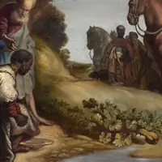
Филипп начинает с Ис. 53, Пётр у Корнилия: «о Нём все пророки свидетельствуют».
Подробнее
Ветхий Завет проповедуют язычникам с первого дня.
Деян. 8:35 · 10:43
- 47–60
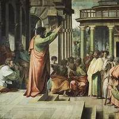
Павел проповедует Христа по истории Израиля.
Подробнее
Три субботы подряд «рассуждал из Писаний»; береяне ежедневно проверяют проповедь Писанием; в Афинах — от Сотворения.
Деян. 13:16-41 · 17:2-3, 11, 24-31 · 28:23
- 50–90
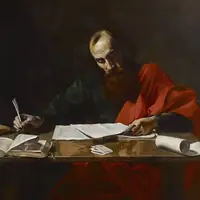
Послания учат на сюжетах Ветхого Завета.
Подробнее
Адам, Каин и Авель, Ной, Авраам, Сарра и Агарь, пустыня, Мелхиседек, Исав, Валаам, Иов, Илия — «всё, что писано прежде, написано нам в наставление».
Рим. 4 · 15:4 · 1 Кор. 10:1-11 · 2 Кор. 3:14 · Гал. 3-4 · Евр. 11 · 1 Пет. 1:10-11
- 30
II — XV вв. Отцы церкви и Средние века
Отцы проповедуют по тексту — но простым верующим Писание становится недоступно.
- ок. 144

Церковь отвергает Маркиона и его «злого Бога Ветхого Завета».
Подробнее
Та же ошибка, что и сегодня: «в ВЗ злой Бог, в НЗ — Бог любви».
- ок. 165
Мелитон, «О Пасхе»: Агнец Исхода — Христос.
- ок. 180
Ириней: один Бог в обоих Заветах, вся история собирается во Христе.
Подробнее
«Против ересей» и «Доказательство апостольской проповеди» — первый очерк всей истории спасения.
- III век
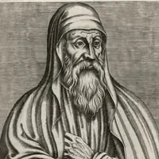
Ориген пишет комментарии почти на всю Библию.
Подробнее
Проповедовал по книгам подряд. Но часто уходил в аллегории, а часть его учений церковь осудила в 553 году.
- 325 · 381

Никео-Цареградский Символ веры.
Подробнее
Христос «рождённый прежде всех веков»; учение о Троице, которое исповедуем и мы.
- ок. 360
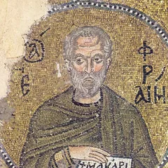
Ефрем Сирин учит Писанию в гимнах.
Подробнее
Толкования на Бытие и Исход.
- после 380

Обратная сторона признания: многие крестятся без обращения.
Подробнее
Когда христианство стало верой империи, пастырям стало труднее вести каждого к знанию Писания. Против этого и проповедовали Златоуст, Августин и другие отцы.
- 386–404
Иоанн Златоуст проповедует по целым книгам подряд.
Подробнее
Беседы на Бытие, Матфея, Иоанна и послания Павла; призывал мирян читать Библию дома.
- ок. 419
Августин: «Новый Завет в Ветхом сокрыт, Ветхий в Новом открывается».
Подробнее
Так он пишет в «Вопросах на Гептатевх» (II, 73). Проповеди по книгам; «О граде Божьем» — история двух градов от Каина и Авеля.
- ок. 420
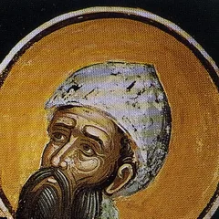
Кирилл Александрийский: Христос в Пятикнижии.
- средние века
На Востоке Писание звучит по-гречески, по-сирийски, по-славянски.
Подробнее
В IX веке Кирилл и Мефодий переводят Писание и богослужение на славянский. На Западе Писание остаётся на латыни, понятной всё меньшему числу людей, а поместный синод в Тулузе (1229) запрещает мирянам держать книги Библии.
- 1170–1382
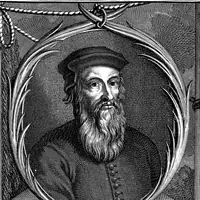
Свет: Вальденсы и Уиклиф возвращают народу Слово.
Подробнее
Вальденсы переводят Писание на народный язык (ок. 1170), Уиклиф — на английский (ок. 1382); братья общей жизни читают и переписывают книги.
- 1415

Ян Гус ставит Писание выше церковных властей — и идёт на костёр.
Подробнее
Пражский проповедник учил народ по-чешски. Констанцский собор осудил его за взгляды Уиклифа на церковь и власть папы; отречься Гус отказался.
- ок. 144
XVI век Реформация
Писание возвращается народу: переводы, комментарии, катехизисы.
- 1517
Лютер: 95 тезисов против индульгенций.
Подробнее
С вопроса о покаянии начинается Реформация; позже её суть выразят формулы «только Писание, только вера». Постиллы Лютера — проповеди на воскресные чтения — учили её основам целые страны.
- 1519
Цвингли проповедует Матфея подряд, с первого стиха.
Подробнее
Отказ от календарных чтений в пользу последовательного чтения. В 1525 году в Цюрихе — «Пророчество»: ежедневный разбор Писания для пасторов.
- 1522–1534
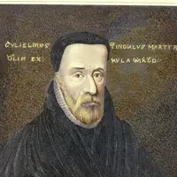
Библия Лютера на немецком; Тиндейл переводит на английский.
Подробнее
Тиндейл обещал: «Сделаю, чтобы мальчик за плугом знал Писание лучше тебя». Он успел перевести Новый Завет, Пятикнижие и часть Ветхого; в 1536 году его казнили.
- 1536–1559
Кальвин: «Наставление» — путеводитель по Писанию для простых служителей.
Подробнее
Комментарии почти на все книги Библии и проповеди по книгам подряд; вернувшись в Женеву, продолжил с того стиха, на котором остановился.
- 1563
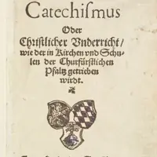
Гейдельбергский катехизис — вера для детей и взрослых.
- 1517
XVII — XX вв. Протестантские богословы и служения
Заветное и библейское богословие, разбор Библии в домах — и в Российской империи.
- 1646–1647

Вестминстерское исповедание: богословие заветов.
Подробнее
Пуритане проповедуют по книгам, каждая семья читает Писание дома.
- 1708–1714

Комментарий Мэтью Генри — для простых верующих.
Подробнее
До смерти в 1714 году Генри дошёл до книги Деяний; послания и Откровение дописали другие пасторы.
- 1854–1892

Сперджен: из любого текста — дорога ко Христу.
- 1860-е

Штундисты: крестьяне собираются на часы чтения Библии на юге России.
- 1874

Лорд Редсток и Пашков: чтения и разбор Библии в Петербурге.
Подробнее
В 1876 году Пашков основывает «Общество поощрения духовно-нравственного чтения».
- 1876

Синодальная Библия: всё Писание на русском — для каждого.
- 1948
Гергардус Вос, «Библейское богословие».
Подробнее
Откровение разворачивается во времени, от эпохи к эпохе: историко-искупительный метод.
- 1980

О. Палмер Робертсон, «Христос заветов».
Подробнее
Вся Библия — единая история заветов, исполненных во Христе. Мередит Клайн — о заветах и устройстве Писания.
- 1646–1647
1980 — наши дни Глубина простыми словами
Книги и уроки для простых верующих, из которых выросла наша методика.
- 1981
Грэм Голдсуорси, «Евангелие и Царство».
Подробнее
Библейское богословие для простых верующих.
- 2002–2007

«Великая картина Бога» Вона Робертса и «Библия в историях» для детей.
Подробнее
Первая — введение в библейское богословие для взрослых, вторая — детская Библия, где «каждая история шепчет Его имя».
- 2006

Лейф Нуммела, «Красная нить Библии».
Подробнее
Финский пастор: всё Писание от начала до конца — о Христе. Русское издание — 2011.
- с 2007

Систематическое изучение Библии простым языком.
Подробнее
Баптистские, методистские и реформатские учителя сложили уроки, по которым мы учимся сами и учим других. С 2007 года пастор Станислав Рыбко обучил по ним больше 30 пасторов.
- 1981
7 · Вопросы
Ответы на частые вопросы
Условия
Это платно?
Нет. Обучение, материалы и пробный урок бесплатны.
Нужно присоединиться к вашей церкви, союзу или течению?
Нет. Мы никого не уводим: наша цель — чтобы люди крепли в своей церкви.
Кто вы?
Протестантская реформаторская церковь «Завет Христа», Санкт-Петербург. Пастор — Иван Гурский. Вместе с нами учат служители других общин; имена и служение каждого — в контактах.
Зачем вы это делаете?
Мы сами служители разных протестантских церквей и видели в своих общинах проблемы, описанные выше. Хотим донести глубину Писания в жизнь веры простых верующих, облегчить жизнь служителей и пасторов. Делаем это ради Христа.
Нет ли скрытых целей: денег, вербовки?
Нет. Мы сразу называем себя и ничего не просим взамен. У нас нет цели привести вас в нашу деноминацию, получать от вас деньги или увести ваших прихожан и служителей. Мы не проповедуем странных учений вроде Синчхонджи и не считаем себя единственно правильными верующими: Христова Церковь больше любого содружества, и нашего тоже. Нам важно одно: чтобы в вашей церкви люди знали Писание и крепли во Христе.
Богословие
Во что вы верите?
Мы — Протестантская реформаторская церковь «Завет Христа», Санкт-Петербург. Исповедуем Троицу, Никео-Цареградский Символ веры и принципы Реформации: только Писание, только вера, только благодать, только Христос. Уроки стоят на заветном (реформатском) богословии: Бог ведёт свой народ заветами, и все они исполняются во Христе (урок о заветах).
Что вы учите о крещении и дарах Духа?
Водное крещение — видимое свидетельство завета с Богом, которое человек принимает по вере и осознанно, один раз в жизни (урок о крещении). Каждый верующий имеет Духа Святого; крещение Духом — сила для свидетельства о Христе (Ветхий и Новый Завет, о Святом Духе). Дары Духа, включая иные языки и пророчества, даны для служения и назидания и проверяются Словом (1 Кор. 12, 1 Кор. 14).
Мы баптисты (пятидесятники, лютеране…). Нам подойдёт?
Думаем, да: уроки учат читать сам текст Библии. Но мы не скрываем своих взглядов на крещение и дары — посмотрите уроки выше. Там, где ваша церковь думает иначе, решает ваш пастор; на обучении мы обсуждаем такие места открыто.
Чем вы отличаетесь от групп, которые тоже «изучают Библию»?
Мы исповедуем Троицу, учим по открытому тексту, ничего не скрываем и не уводим людей. Смотрите сравнение выше.
Внедрение
Нужно менять литургию, музыку, устройство церкви?
Нет. Всё остаётся вашим.
Как совместить с воскресной школой, домашними группами, курсами?
Уроки встраиваются в то, что у вас уже есть: проповедь, библейская школа, группы, воскресная школа. Можно начать с одной группы служителей.
Сколько времени это займёт?
Ученику — видео и созвон около 1,5–2 часов в неделю. Полный цикл от Бытия до Откровения — около семи лет; интенсив по Бытию — несколько месяцев.
Кто будет учить?
Ваши служители — под руководством вашего пастора. Мы только готовим их онлайн, а служат они у себя в церкви. Если пастор попросит, наши служители могут приехать на несколько недель, но наша цель — поддержать вас, а не служить вместо вас.
Онлайн или очно?
Как удобнее: созвоны онлайн, пробный урок можем провести у вас.
Подходит ли это детям и подросткам?
Да: уроки проверены на детях, пожилых и людях без богословского образования. А сейчас мы готовим отдельную версию уроков для детей — с играми, картинками и подачей, понятной им по возрасту.
Материалы
Где посмотреть уроки?
Конспекты — на этом сайте, видео — на YouTube, Rutube и VK Видео.
На каком языке?
Основные материалы — на русском. Те же уроки есть в видео и на других языках:
- английский: Бытие, Исход — Иисус Навин, Судьи — Соломон, Откровение
- немецкий: Бытие, Исход — Иисус Навин, Судьи — Соломон, Откровение
- французский: Бытие, Исход — Иисус Навин, Судьи — Соломон, Откровение
- румынский: Бытие, Исход — Иисус Навин, Судьи — Соломон, Откровение
- украинский: Бытие, Исход, Левит, Числа, Второзаконие, Праздники
Чтобы получить конспекты на этих языках, свяжитесь с нами.
Можно ли учить по материалам без вас?
Да, все материалы открыты, пользуйтесь. Обучение лишь помогает подготовиться: конспекты — как учебник, а учителю и с учебником нужна подготовка. На обучении мы отвечаем на вопросы и разбираем спорные места Писания.